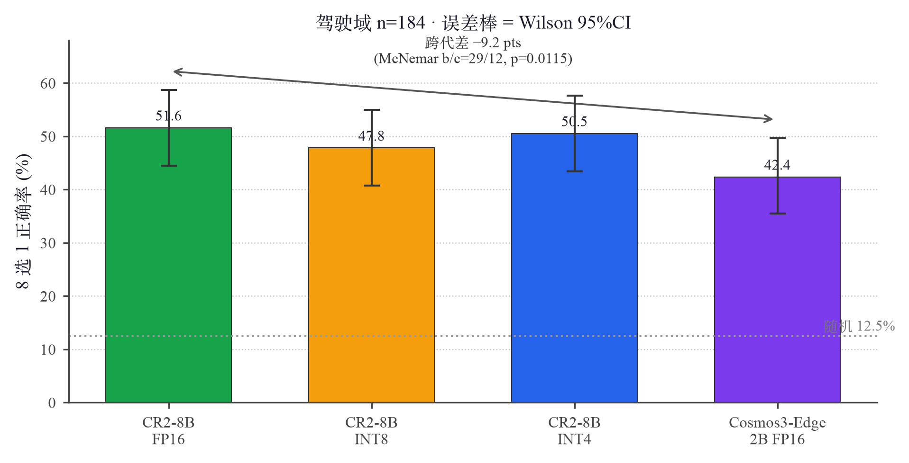
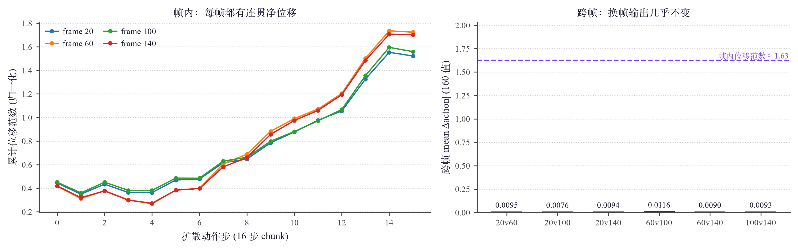

🎬 在线 Demo · Cosmos3-Edge 2B 驾驶场景理解（真实 Orin 推理输出）
本项目第二阶段（Phase W）把 NVIDIA Cosmos3-Edge（4B 全模态世界动作模型 = 2B VL reasoner + rectified-flow 扩散动作专家，MoT 单塔）部署到 Jetson Orin。它在 TRTEdge 0.10.1 官方支持矩阵里只属 Compatible 档（Official 是 JetPack 7.2 / CUDA 13 / TRT 11，而 Orin 是 JetPack 6.2 / CUDA 12.6 / TRT 10.7）——部署的代价是六道具体的兼容墙，本页记录逐道打通的过程与两条结果线。零预算 · 零训练 · 全 Orin。
两条结果线：
cosmos3_policy_inference 冒烟通过（action [1,16,10] 全 finite、5154 ms/round）；但换输入帧输出几乎不变（跨帧 mean|Δ|≈0.009，比帧内自身位移小 ~170×）——这是 vision-only 单帧 conditioning 的能力边界，非引擎 bug（§W.3）。因此在线 demo 锚定已验证 works 且帧敏感的 reasoning 侧。本页是 Phase W 专篇；第一阶段（CR2-8B 量化部署，图 1–21 / 表 1–13）见 CR2-8B 量化部署。问题、根因与解决的完整工程记录见 PROBLEMS.md §K/§L。
TRTEdge 0.10.x 官方支持 Cosmos3-Edge，但 Orin 的 JetPack 6.2 只是 Compatible 档。实测代价 = 六道墙，各有工程解；其中两道同源（都是"TRT-11-only 算子墙"），用同一把自研武器解决。
| 墙 | 现象 / 根因 | 解法 |
|---|---|---|
| K1 | CuTe DSL 预编译件缺 sm_87+cuda12 ⇒ configure FATAL（上游 cuda13 targets 含 aarch64:sm_87，cuda12 只有 sm_110/121，刻意排除） | 初解 -DENABLE_CUTE_DSL=OFF（见 K5 反噬）；根治见 K5 自生成 |
| K2 | nlohmann 子模块缺失（depth-1 clone）⇒ C++ 编译失败 | git submodule update --init --recursive |
| K3 | XQA JIT NVRTC 缺头 ⇒ llm_build 插件创建失败（cuda12.6 的 cuda_fp16.h 依赖链被 CUDA 13 重组掉） | pluginJitCompiler.cpp 注入 -I$CUDA_HOME/include（NVRTC 从磁盘解析系统头，一处补丁覆盖全部 JIT kernel） |
| K4 | ViTAttentionPlugin 无 legacy 后端 ⇒ visual_build 失败（枚举只剩 CuTe DSL；USE_TRT_NATIVE_ATTN=1 导出的 TRT_Attention 要 TRT≥11） | 分解注意力导出补丁（基础算子块对角 ragged self-attn） |
| K5 | prefill FMHA 无 legacy 后端 ⇒ 引擎能建、推理必挂（ContextFMHABackend 只剩 CuTe DSL） | 自生成 cutedsl_aarch64_sm_87_cuda12.tar.gz（CUDA_CTK_VERSION=12.6 CUTE_DSL_TARGETS=aarch64:sm_87）→ -DENABLE_CUTE_DSL=fmha 重建 → 冒烟全绿 |
| K6 | policy und_prefill/gen 导出 ONNX 标准 Attention/RotaryEmbedding ⇒ TRT 10.7 parser 不认（und：28 Attention + 84 RotaryEmbedding） | 分解注意力 + RoPE 补丁（USE_DECOMPOSED_POLICY=1 门控，§W.4） |
TRT_Attention）与 K6（policy 的 ONNX Attention/RotaryEmbedding）同源同解；K6 是 policy 链唯一通路（gen 无 FMHA backend 可选）。
协议与主页 §1.11/§1.12 完全一致（同帧、同题、同标答、贪心、cap 12、6 帧 @448），唯一变量是模型。输入直接复用 bench/ood_eval/ood_input_goat.json（messages 格式模型无关，runtime 用引擎目录内自己的 chat template）。打分复用同一套解析 / Wilson CI / McNemar 实现，故与 CR2-8B 各档方法学逐位可比。

eval/cosmos3/cosmos3_viz.py 从原始输出重算（Cosmos3 k=78/184、unparsed=0），非手填。| 模型 | 正确率 | Wilson 95%CI | vs CR2-8B FP16 | E2E/请求 |
|---|---|---|---|---|
| CR2-8B FP16（goat） | 51.6% | [44.5, 58.7] | — | ~1.2 s |
| CR2-8B INT8（dog） | 47.8% | [40.7, 55.0] | −3.8 pts（p=0.143 ns） | 0.50 s |
| CR2-8B INT4（dog） | 50.5% | [43.4, 57.7] | −1.1 pts（p=0.815 ns） | 0.68 s |
| Cosmos3-Edge 2B FP16（goat） | 42.4% | [35.5, 49.6] | −9.2 pts（b/c=29/12，p=0.0115 显著） | 0.91 s |
| 184/184 全 EOS、零解析失败、字母分布均衡（A17 B22 C20 D23 E29 F26 G19 H28，无坍缩）。引擎：FP16，llm 3.7G + visual 940M（分解注意力版）。 | ||||
Policy-DROID（nvidia/Cosmos3-Edge-Policy-DROID，机器人操作 WAM）四组件引擎全部建成，cosmos3_policy_inference 图+prompt→action.json 冒烟通过（goat）。第六道墙 K6 与打通见表 W1 与 §W.4。
| 组件 | 引擎 | 说明 |
|---|---|---|
| und_prefill | 2.7 G | 理解 prefill（28 层） |
| gen | 2.7 G | rectified-flow 扩散动作专家 |
| vae_encoder | 292 M | 观测编码 |
| text_tokenizer | 17 M | + embed_tokens 513 M（staged） |
冒烟结果（官方 UMI 首帧图 + "pick up the object"，4 步扩散）：exit=0，action shape [1,16,10]，160 值全 finite、范围 [−2.13, 2.77]，逐维分布有结构（d3≈−1.93±0.15、d5≈+2.15±0.14 紧聚类，非噪声）；延迟 5154 ms/policy round。

DEFAULT_NUM_INFERENCE_STEPS=4）use_state=False，设计如此），单帧图像不足以产生帧敏感动作。因此它做不了"换场景→换动作"的诚实 demo，demo 锚定 reasoning 侧。复现 eval/cosmos3/w3_frame_sensitivity.py（证据 w3_actions/ 已入库）。lerobot/droid_100 GT 是 7 维笛卡尔 euler + lerobot 自归一化；Edge 输出是 10 维 midtrain rot6d + NVIDIA quantile 归一化；cosmos cookbook 的 droid 样例又是 8 维关节空间。三套表示 + 三套归一化 + 时间分辨率不同（policy 5fps vs GT 15fps）⇒ 四重错配，「对不上」是必然，非引擎错。拿 turnkey 输出比参考 GT 前，必须先核对表示 / 归一化 / state / 时间四者是否对齐。
K4（visual）与 K6（policy）同源：TRTEdge 把注意力/RoPE 经 trt::attention_onnx/trt::rope_onnx custom op lower 成只有 TRT≥11 parser 认识的算子。解法 = 在导出前把它们用基础 ONNX 算子分解掉，任何 TRT 版本可解析，TRT 用 Myelin 自行融合：
attention_pos_id 是恒等 gather（cosmos3PolicyRunner.cpp:257）⇒ 逐 token 直接对齐，但仍用 torch.gather 保留 position_ids 防被 DCE 导致 runtime 找不到 binding。USE_DECOMPOSED_POLICY=1，两个 modeling 文件 import 换包装器（additive，不动已工作的 reasoning 路径）。分解实现先经 test_policy_decomposed.py 数值对拍（attention vs F.scaled_dot_product_attention err~1e-7、rope vs LLaMA 全维公式 err=0）再导出——避免 ~1h 导出后才发现语义 bug。脚本 scripts/orin/apply_policy_decomposed_patch.py。midtrain 10 维 = [eef_pos(3) + rot6d(6) + gripper(1)]、相对位姿；后处理链 denormalize_action → pose_rel_to_abs（需当前 state 做参照）。droid_lerobot_stats.json（dim0-2 位置 delta≈±0.015 米、dim3-8 rot6d、dim9 gripper[0,1]）；反归一化 0.5(a+1)(q99−q01)+q01。use_state=False）。TRTEdge PolicyRunner 把 action_latent 全填高斯噪声、mask 全 1、只注入 frame-0 图像 latent + und K/V，无本体状态——设计如此，非 bug。这正是 §W.3 帧无关的机理。AV 行车轨迹另走 inverse-dynamics 模式（起始帧+视频→ego 轨迹，无需单独 AV policy 权重），但该模式仅 PyTorch 框架路径、非 turnkey，未 TRTEdge 化（列后续）。
cosmos3_policy_inference 是简化路径——vision+language-only、单帧、无 state 锚点，与 cosmos-framework 参考 server（state-conditioned、多帧历史）输入契约不同。W2 冒烟是部署管线验证（分解引擎端到端跑通、产出结构合法动作），不是动作语义正确性验证；W3 换独立变量（帧）复测后把初判"原地抖动出不了动作"修正为"帧内有连贯位移、但帧无关"——结论从"模型坏"变成"单帧 conditioning 的能力边界"，方向完全不同。demo 因此锚定已验证 works 且帧敏感的 reasoning 侧，policy 动作链定位为「部署打通 + 帧无关边界」。